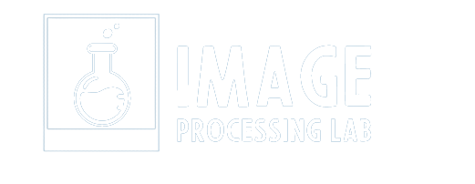

<nav class="navbar navbar-expand-lg ">
  <div class="container-fluid">
    <a class="navbar-brand" href="#">
      
      <span class="m-lg-3 text-light">Image Processing Lab</span>
    </a>


      <div class="navbar-item">
        <ul class="navbar-nav me-auto mb-2 mb-lg-0 fs-5">
          <li class="nav-item">
            <a class="nav-link active text-light" aria-current="page" routerLink="/rotateoptions">RotateOptions</a>
          </li>
          <li class="nav-item">
            <a class="nav-link active text-light" aria-current="page" routerLink="/home">Home</a>
          </li>
          <li class="nav-item dropdown">
            <a class="nav-link dropdown-toggle text-light"  id="navbarDropdown" role="button" data-bs-toggle="dropdown" aria-expanded="false">
              Image operations
            </a>
            <ul class="dropdown-menu " aria-labelledby="navbarDropdown">
              <li class="nav-item"><a class="dropdown-item  text-light"  routerLink="/resizeimages">Resizing Images</a></li>
              <li><a class="dropdown-item  text-light" routerLink="/backgroundremover">Background Remover</a></li>
              <li><a class="dropdown-item  text-light" routerLink="/rotateimages">Rotate Image</a></li>
              <li><a class="dropdown-item  text-light" routerLink="blurimages">Blur Image</a></li>
            </ul>
          </li>
          <li class="nav-item dropdown">
            <a class="nav-link dropdown-toggle text-light" id="navbarDropdown" role="button" data-bs-toggle="dropdown" aria-expanded="false">
              Colour manipulation
            </a>
            <ul class="dropdown-menu " aria-labelledby="navbarDropdown">
              <li><a class="dropdown-item text-light" href="#">GrayScale</a></li>
              <li><a class="dropdown-item text-light" href="#">ColourSpace</a></li>
            </ul>
          </li>
        </ul>
      </div>

  </div>
</nav>
